La porte ET
La porte ET possède plusieurs entrées, mais une seule sortie. Cette porte logique met sa sortie à 1 quand toutes ses entrées valent 1. Dans le cas le plus simple, une porte ET possède deux entrées.
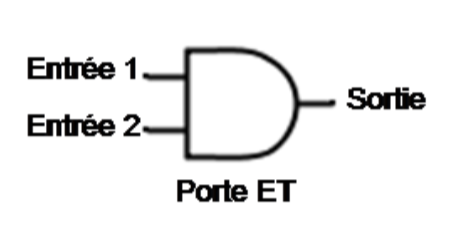
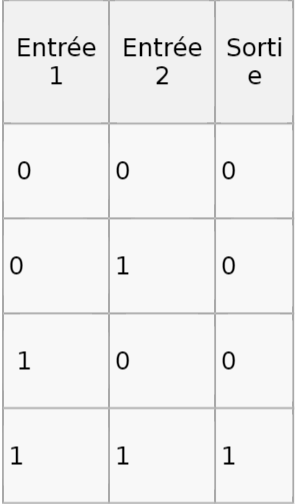
La porte OU
La sortie est à 0 si et seulement si toutes ses entrées sontà 0.

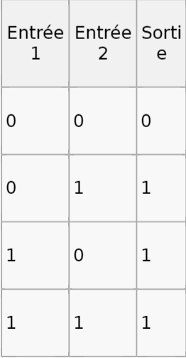
La porte NOR
Elle donne l’inverse la porte OU.
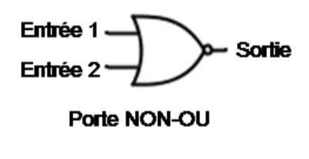
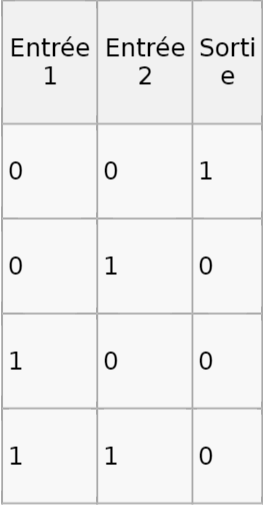
La porte NAND
Donne exactement l’inverse de la porte ET. sa sortie ne vaut 1 que si au moins une entrée est nulle..
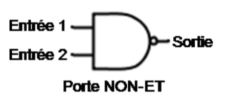
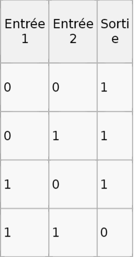
La porte NON
Comporte seulement 1 entrée. Sa sortie est le contraire del’entrée.
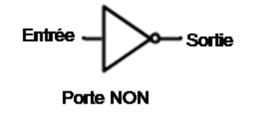
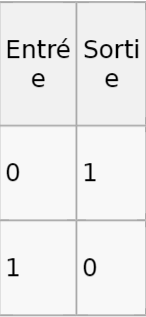
La porte XOR
Appelée aussi OU exclusif, Sa sortie est à 1 quand lesdeux bits placés sur ses entrées sont différents, et vaut 0 sinon.
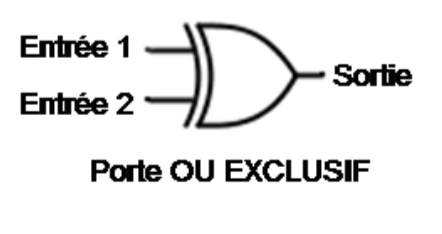
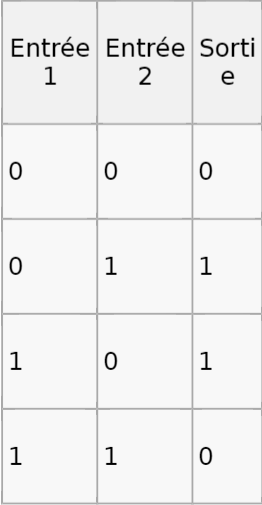